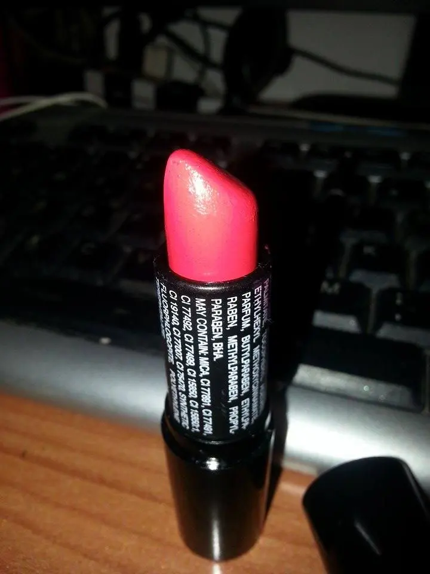
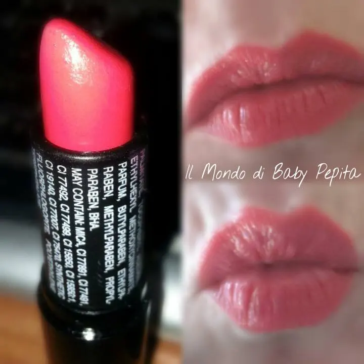
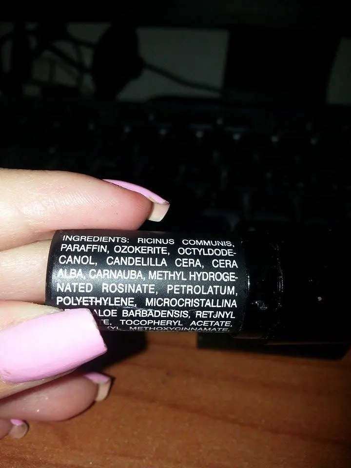
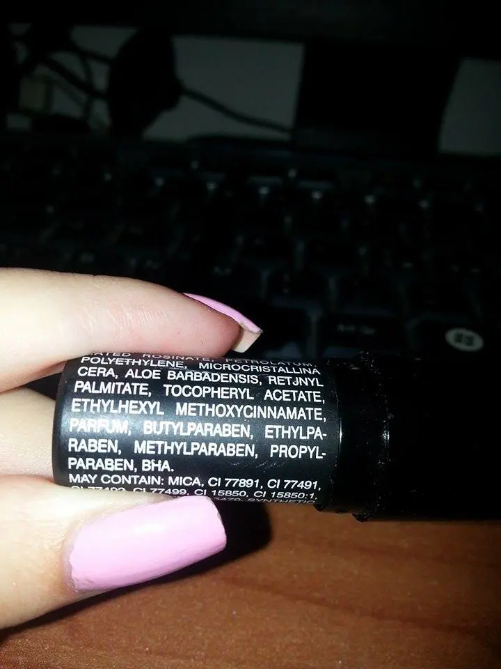
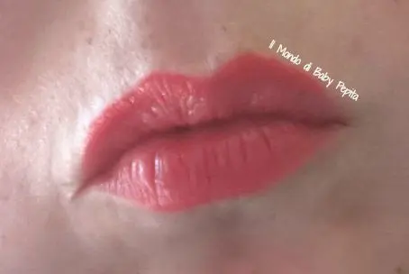
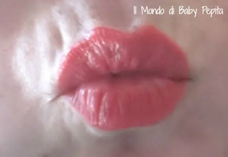
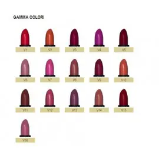
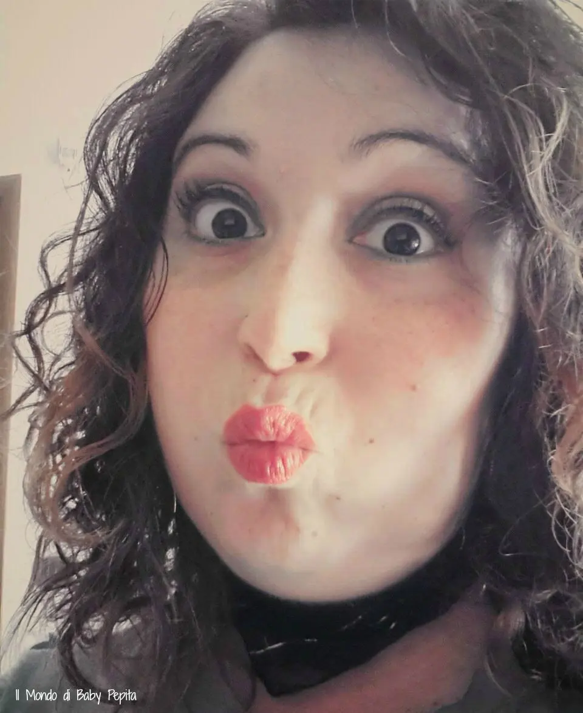
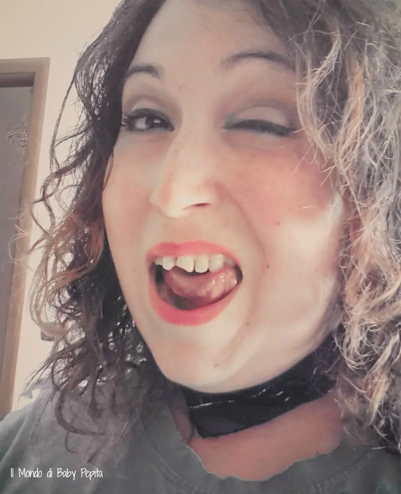

Rossettite Acuta - Le Jolie
E' diventata una rossettite acuta proprio la mia ahahahah
e haimè sono sempre qua a scrivere deui miei rossetti ceh sto riscoprendo ancora una volta. .
Oggi siamo qui con un brand che a me piace molto ..
LE JOLIE
Un paio di anni fa mi fu regalato,
[su mia richiesta perchè volevo questo colore, ihih]
questo bellissimo rossetto, in realtà non diedi peso alla marca, ma quando mi fu portato beh, mi piacque tanto davvero. .
Un corallo che a me ha incantato. .
Sono della linea
Rossetti Velvet
Texture leggera e cremosa, scivola sulle labbra con un velo sottile, ma al tempo stesso intenso.

E in effetti va su che è una meraviglia, senza doppia passata per intensificare il colore. .

Non so se si riescono a leggere gli ingredienti. . ma la cosa bella è anche questa, che mettono gli ingredienti in mostra sin dall'involucro. .


Sulle mie labbra fa quest'effetto fresco e primaverile . .



Beh che dire, non sono rossetti lucidi ma nemmeno completamente matt, sono molto semplici ed eleganti come colori e di sicuro morbidi nell'applicazione.
Disponibili ben in 16 colorazioni uno più bello dell'altro

Purtroppo non dispongo degli swatches degli altri colori ma con questo che posseggo, ho avuto la prova che non nemmeno gli altri lasciano delusi. .
CONSIGLIO:
1. Chi ha delle labbra poco delineate è sempre meglio prima un contornolabbra con lo stesso colore del rossetto o che si avvicini.
2. Per chi ha intorno alle labbra rughette o esfoliazioni è meglio mettere un filo di primer prima o correttore e di sicuro otterrete il risultato sperato.
LA DURATA:
Sinceramente dipende da cosa si fa sempre, lo dico tutte le volte perchè comunque ci sono ragazze che capita che vogliano un rossetto con una durata immensa. .
Questo di sicuro non è di quelli che lo metti ora e va via stasera, assolutamente, ma le sue 3-4 ore senza mangiare e bere va bene ihihih

Chi ha mai provato questo brand? come vi siete trovate? ditemi la vostra. .
Lascio il sito di questa bella marca, dateci un'occhiata.
http://www.lajolie.it/index.php
FACEBOOK: https://www.facebook.com/makeup.lajolie
